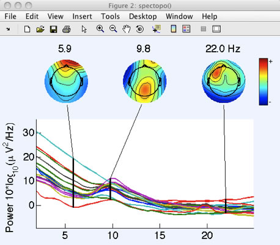

Before we start using ERPLAB's functions, we'll use one of EEGLAB's functions that will prove useful at a later stage. Specifically, we will add location coordinates for each electrode site (see the EEGLAB documentation for more information). Our original data file contained electrode labels conforming to the International 10/20 System, and EEGLAB can automatically determine standard coordinates on the basis of these labels. These coordinates are not guaranteed to be exact, but they are a reasonable approximation for simple procedures such as plotting scalp maps. If you want exact electrode locations, you will need to use a 3-D digitizer and measure the locations for each subject.
To add coordinates based on the electrode labels, select Edit > Channel locations, which will bring up the window shown here:
Click Ok, and you will see the window shown here:

Equivalent Script Command:
%Adding Channel Locations to Dataset
%Make sure that you change the path to indicate the location of eeglab within your file system
EEG=pop_chanedit(EEG,'lookup', '/Users/etfoo/Documents/MATLAB/eeglab9_0_2_3b/plugins/dipfit2.2/standard_BESA/standard-10-5-cap385.elp');
For simple data files such as the one used in this tutorial, you can accept all of the default values and simply click Ok. This will add the coordinates to the current dataset.
EEGLAB and ERPLAB require electrode coordinates for plotting topographic maps; you will get an error message if you try to plot a topographic map before you've added the coordinates. You can verify that the coordinates have been added by running a routine that plots topographic maps. For example, if you select Plot > Channel spectra and maps and select the default parameters in the window that appears, as shown in the screenshot below:

Click OK and you will see the following plot:

Equivalent Script Command:
%Plot Channel Spectra and maps
figure; pop_spectopo(EEG, 1, [0 2139038], 'EEG' , 'percent', 15, 'freq', [6 10 22], 'freqrange',[2 25],'electrodes','off');
Later parts of this tutorial will make use of this dataset, so you should save it to disk. First, however, you should change the name of the dataset to S1_Chan so that you can differentiate between this version and the original version. To do this, select Edit > Dataset info. This will bring up the window shown below, and you should enter S1_Chan in the Dataset name field. Click Ok, and then look in the Datasets menu. You should now see that it is named S1_Chan.

You can now save the modified dataset by selecting File > Save current dataset as. We recommend that you give the file the same name as the dataset, but with a .set extension (S1_Chan.set).
Equivalent Script Command:
%Setname is S1_Chan
%Filename is S1_Chan.set
%Path is /Users/etfoo/Desktop/tutorial_script/
%Note that you will need to replace the path with the actual location in your file system
EEG.setname='S1_Chan';
EEG=pop_saveset(EEG, 'filename', 'S1_Chan.set', 'filepath', '/Users/etfoo/Desktop/tutorial_script/');
%Alternatively, the following version will put the file in Matlab's Current Folder
EEG.setname='S1_Chan';
EEG=pop_saveset(EEG, 'filename', 'S1_Chan.set');
| <<Example Experiment | Table of Contents | Background Concepts>> |